|
2010年夏天西藏行（青藏线和318国道川藏南线）图片日记
day7,2010年7月23日
四川省甘孜州理塘县 - 西藏芒康县
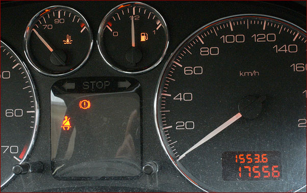
7月23日早上理塘县出发里程17556公里，从长沙出发已经2300公里了
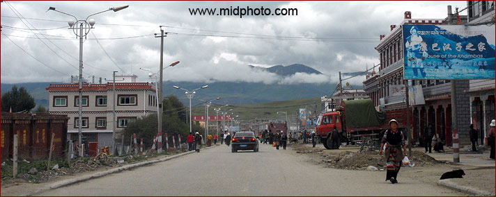
理塘县
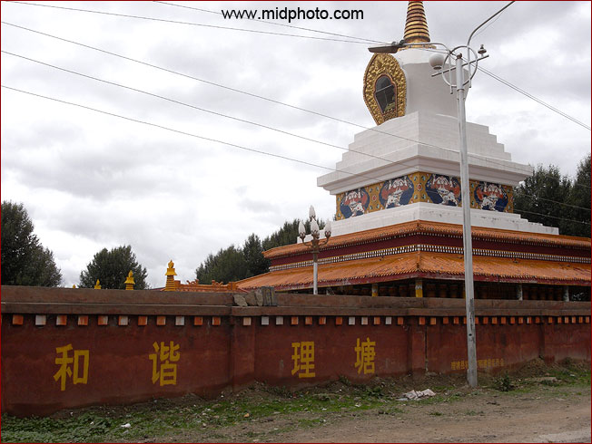
和谐佛塔
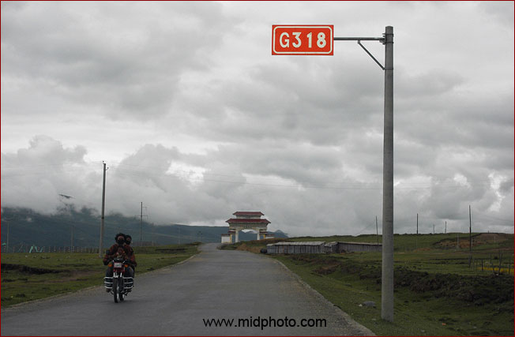
318国道
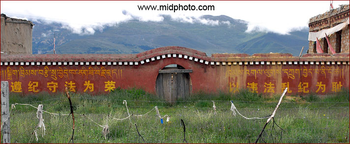
八荣八耻，给我们的心灵画了一个很大的饼
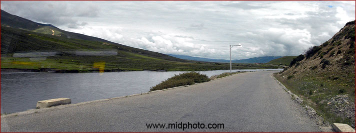
伴水而行。318国道
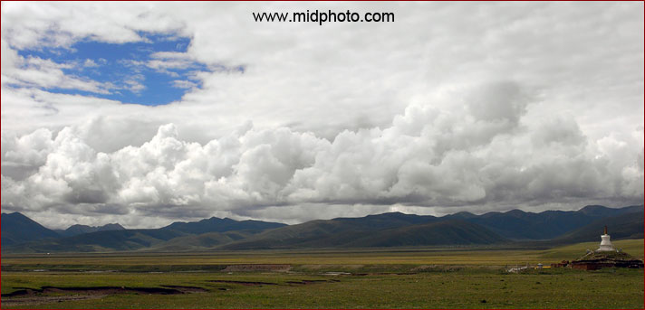
路边佛塔
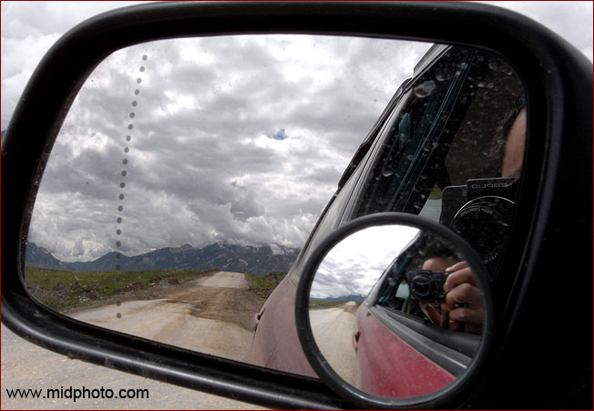
318国道
忧郁的318国道（21）
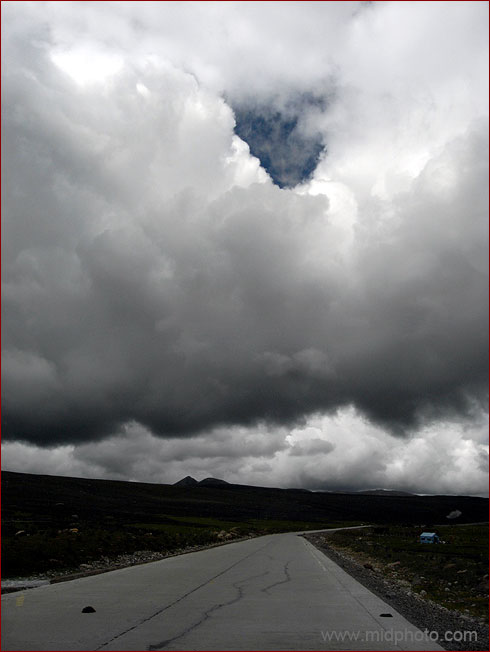
忧郁的318国道（22）
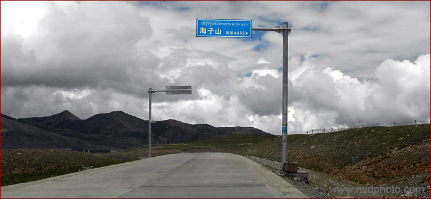
海子山垭口，海拔4685米
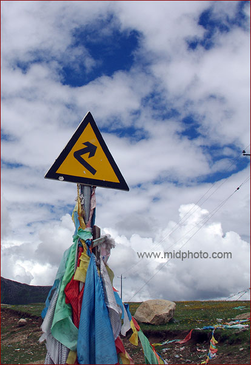
联合拍摄
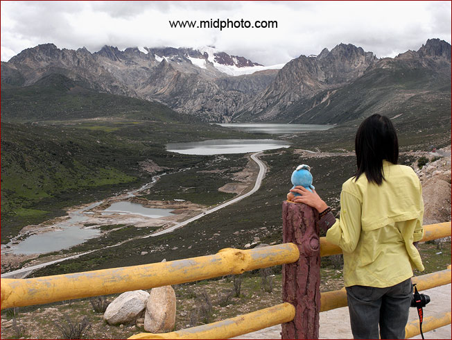
大小海子
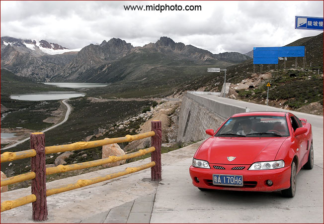
在这里遇到了一辆广州牌照的吉利美人豹，车主说前面不远就是芒康县，但再往前去左贡县的路非常烂，他的车底盘太低，无法通过被迫返航（回成都）。我心里凉了半截，我的标致307底盘高度和他的车差不多，难道我可以飞过去？但我还是决定继续前进，没有见到棺材我是不会掉泪的。
鸭子为证，大小海子是出发7天来最漂亮的风景。联合拍摄
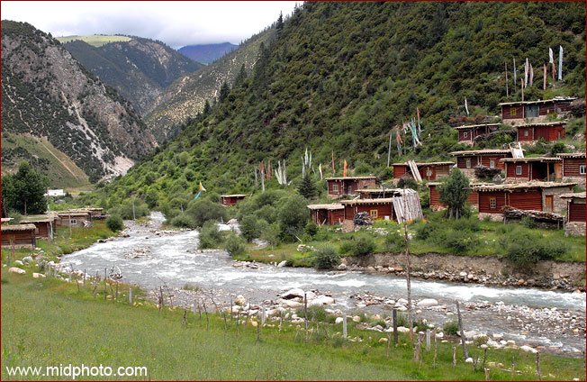
路边的藏式小屋
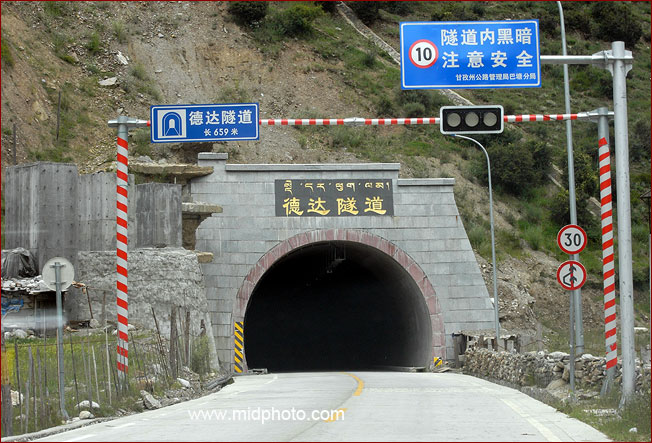
连续过隧道
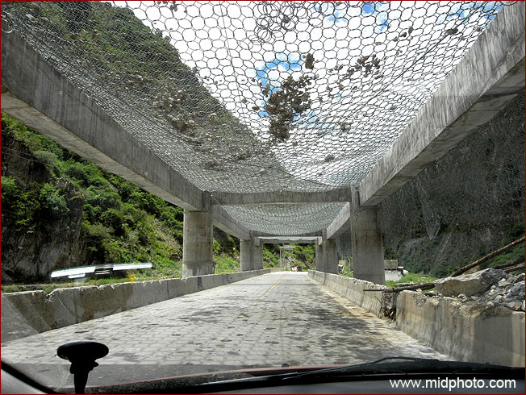
从隧道出来又钻进网兜，这是对付山上落石的金属网。行走在这网兜公路上，不知应觉得安全还是危险
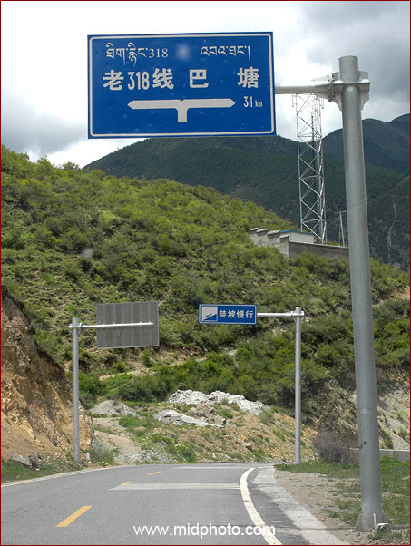
这张图片可以解释为什么318沿线相隔不远的新路碑和老路碑有时会有几十公里甚至上百公里的差距，因为公路在不断的改道，自然因素（塌方重建）或者人工因素（裁弯取直以及新的隧道）。
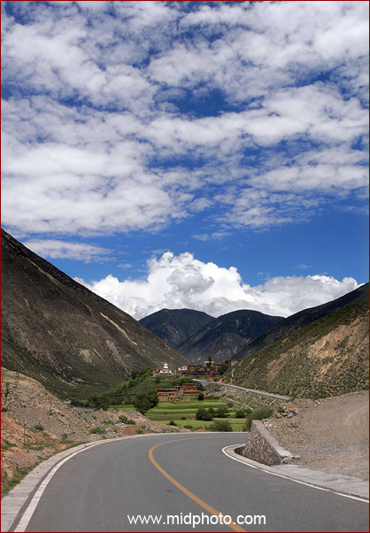
对蓝天白云已经麻木
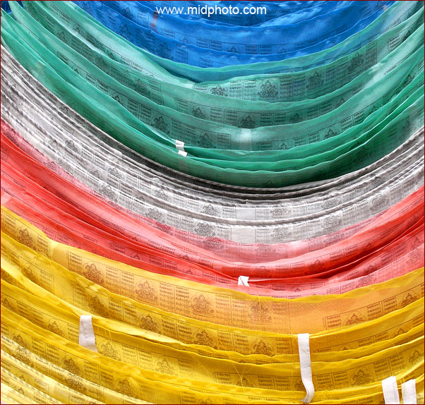
密集的经幡
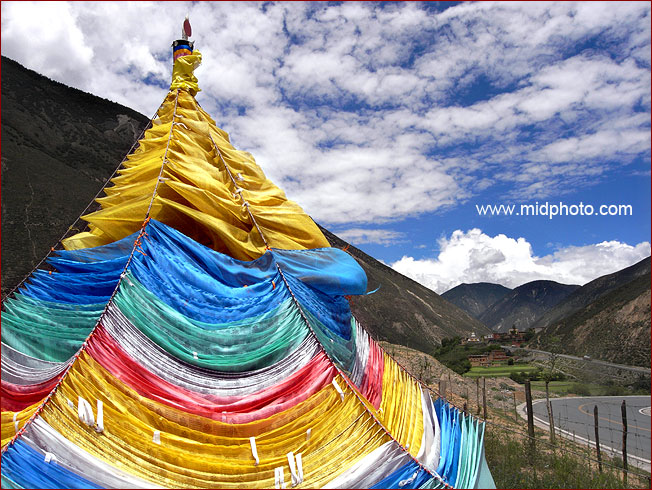
就是这个经幡之塔
联合拍摄
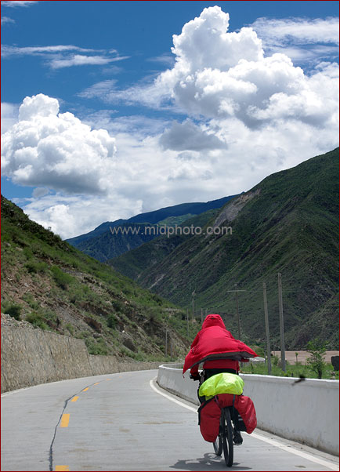
红色虎妞。联合拍摄
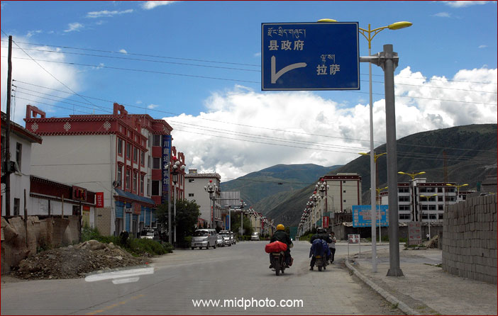
下午两点到达巴塘县。这是四川和西藏的分界县。往右拐即去拉萨
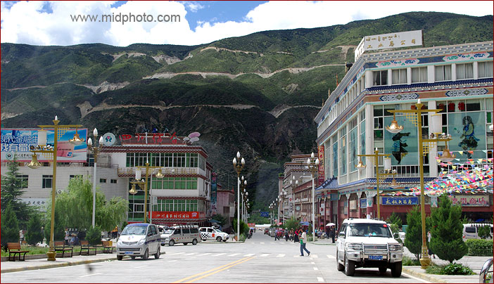
巴塘县。联合拍摄
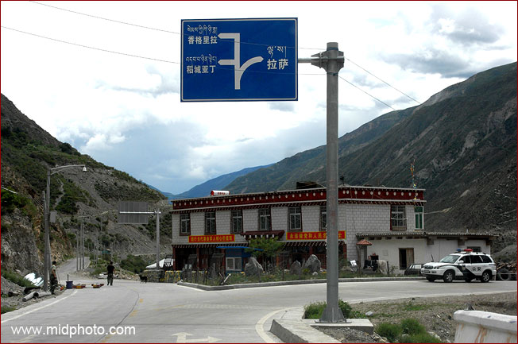
下午三点到达真正的四川和西藏分界点。这个三岔路口是国道214（滇藏线）和318（川藏线）交汇处，往左去云南德钦县和香格里拉，往右即进入西藏自治区境内。
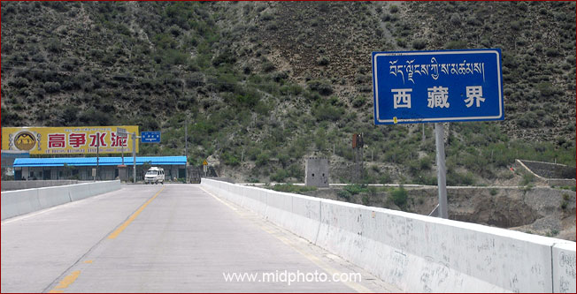
金沙江大桥。西藏界。
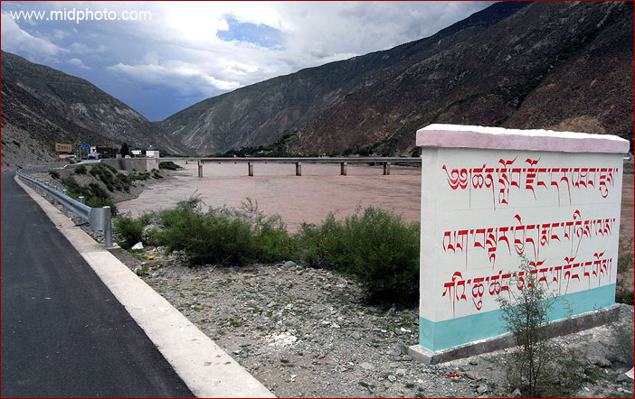
金沙江大桥。西藏界。这是长江的上游。终于走在西藏的大地上了。
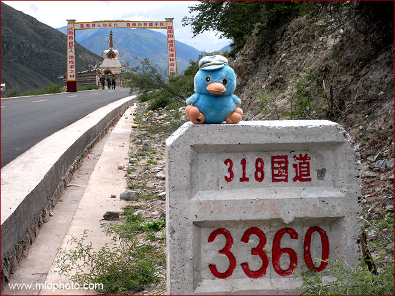
进入西藏后318国道的第一个里程碑，3360公里
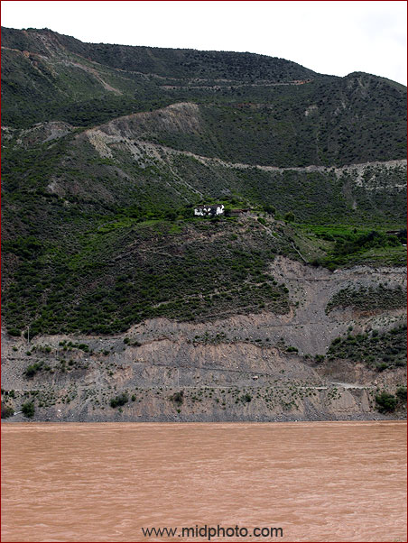
金沙江小屋。面朝大河，春暖花开。
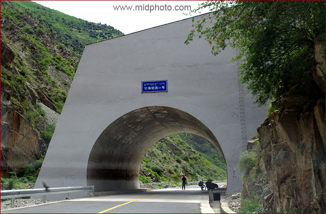
竹海明洞一号。明洞是治理塌方的有效手段。我们在这附近带上了两个要求搭车的武警战士。联合拍摄
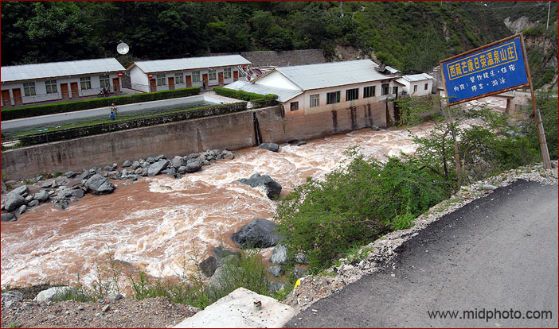
下午三点半看到西藏芒康日荣温泉山庄。我很想在这里泡个温泉，彻底休整一下。但考虑到小言需要在8月5日之前回到南宁，行程很紧，还是决定继续赶路。
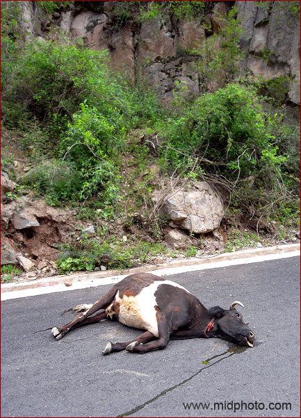
牦牛，高原之舟，牛失前蹄，摔死了。好像是一头怀孕的母牛，惨。
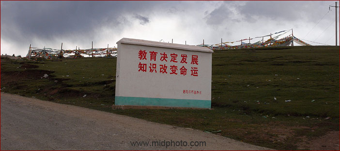
教育决定发展，知识改变命运。没错，但应该把什么样的知识教给孩子们？孩子们就像一张白纸一样，是用单一的思想来给孩子们洗脑，还是教给他们真正独立思考的能力？
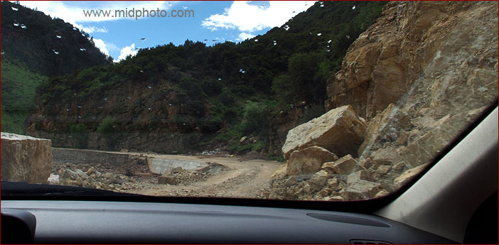
芒康境内的柏油路很快就结束了，下午4点，开始遭遇不断的塌方和滚石
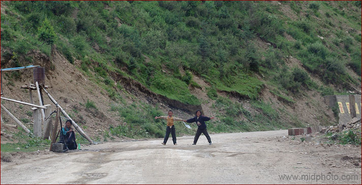
然而最糟糕的不是道路，而是人。芒康一带的康巴藏区民风甚差。很多小孩拦车要东西，有的孩子连糖果和铅笔都不要，直接要现金（他们喊：钱！钱！钱！）有时几个孩子手拉手把整个路挡住，让你不得不停车，车一旦停下，小的孩子会吊在反光镜上，大一点的孩子就整个趴在车前，其他孩子则一拥而上。 大人们就在旁边也不管。简直类似劫道。
我车上一点小东西都没准备，看到孩子拉手拦车，我是一路闪着大灯按着喇叭冲过去的。冲过来之后只听得车顶和玻璃一阵乱响，原来是孩子们在后面扔石头砸车。这是一种非常恶劣的行为。
在另一个村子，几个大一点的孩子专门在路最差的水坑等着，车子一旦靠近他们第一个动作不是拦车，而是在地上捡石头，做出要砸车的样子，意图就是逼想冲过去的司机停车。我照冲不误。这次回来发现车上被蹭漆和砸小坑不少，都是这些孩子们的杰作。
我虽然是一路冲过来的，但是我心里非常后怕，这万一要是挂到一个孩子，我绝对无法轻易脱身。后来在波密遇到一辆北京牌照的长城哈弗，他们在康巴藏区不小心撞到了一辆藏人的长安之星小面包车（保险杠受损），对方开口就要两万，这车新车也就四万多元，当地的交警也不管。最后北京哈弗赔了八千元才得以脱身，而这个保险杠原厂的也不到一千元。回到长沙和朋友说起，他们说这不算过分，去年他们一辆车轻微挂到了一个康巴女孩，一点伤都没有，最后赔了四万元才被放车。穷山恶水出刁民，此话不假。
应该指出的是，康巴藏区数百年来有拦路抢劫的传统，19世纪进藏的外国传教士多有记载。虽然现在是法治天下，但传统的力量是不可忽视的。
忧郁的318国道（23）
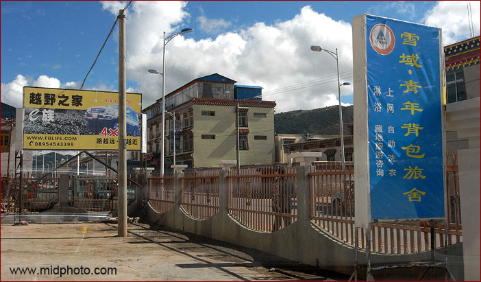
今天收个早工，下午5点20到达芒康县城，虽然离天黑还有三个小时，但我决定不再前进，早点住下休息。住雪域青年背包旅舍，这里也是越野之家网站（www.fblife.com）推荐住处。
住下之后听到很多坏消息，前方往左贡路况极差，再往怒江则有严重塌方，好像路已经断了两天。有几辆车包括一辆五十铃越野车和一台铃木吉姆尼越野车都已决定返回。在停满越野车的院子里，我这辆标致307城市小车特别打眼。我是进退两难啊。
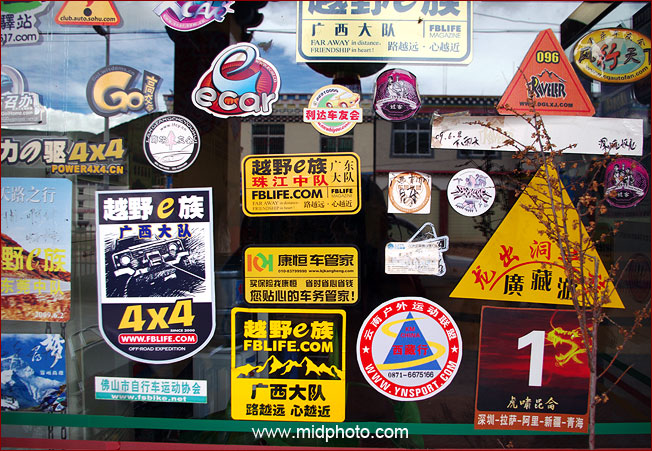
旅馆大门贴满了越野的标志。但作为一个彻底的环保人士，我一向主张开小排量车（越野车也有小排量的）。什么时候我们第一眼看到一辆豪华大型越野车的时候，不是想到此人很成功，而是想到此人对环境的破坏很大，那我们的环保事业才真正有希望。
我这次开家用小车进藏不是发神经，我想证明一下，小排量家用车也是可以进藏的。当然，更好的是骑单车，我迟早会再骑单车进藏一次。
水果在芒康是较贵之物（香瓜更是难寻）。在旅馆房间，小言高兴的把一个香瓜和一个西瓜举了起来。这还是出发第二天我们在湖北境内买的，没想到一直带到了西藏。
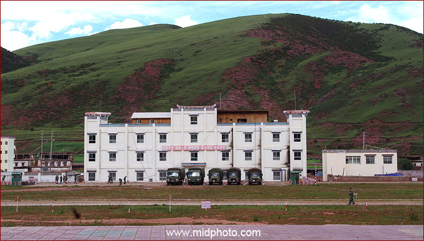
这是芒康兵站。教训：不能随意拍摄军事目标。我拍完之后两个哨兵直冲我而来，强令我删除。本以为删完了，没想到一整理里面还有一张，呵呵。联合拍摄
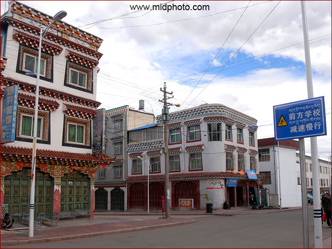
芒康县大街上
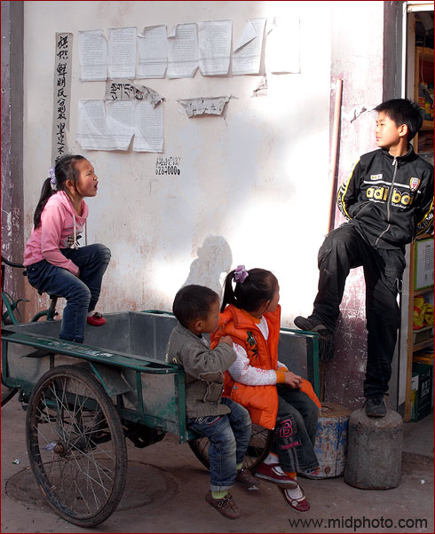
芒康县城的孩子们
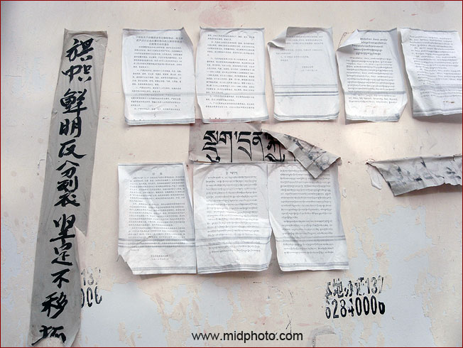
孩子们头顶的墙壁上贴着中共芒康县政法委公告，旗帜鲜明反分裂（有举报电话）
|